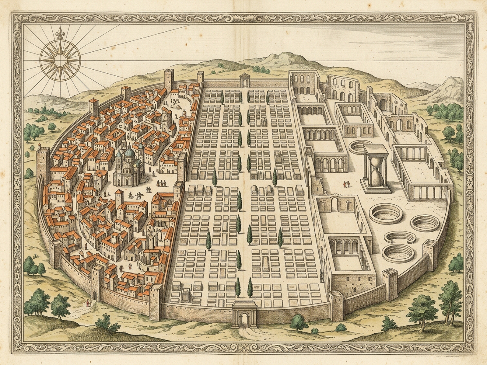
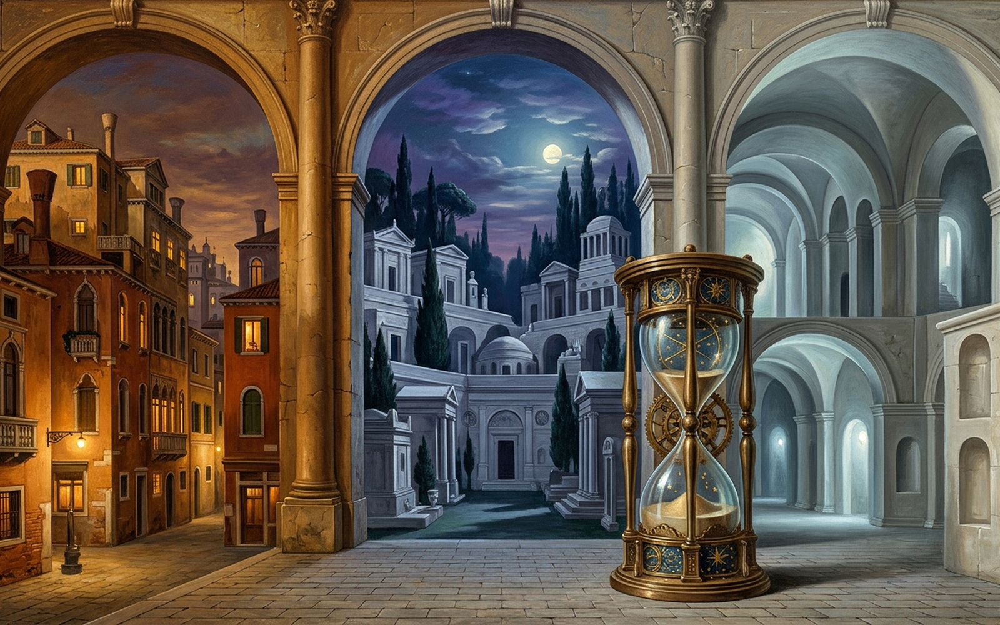

LAUDOMIA — THREE CITIES OF ONE NAME
Stone-Slab Necropolis · Crowded Living Arcades · Porous Sponge-Marble Unborn Domes
Generation
Epoch 1
Living
148 Souls
Dead Slabs
420 · Ring 3
Unborn
Uncountable Silence
M
Sound: Muted
P
Royal Plates
R
Reset
All Three
Living Quarter
Stone-Slab Necropolis
Porous Unborn Niches
Click slabs, arcades, porous niches, funnel pit, or bronze clasps
N
Consult Slab
U
Unborn Hollows
G
Advance Gen
F
Compress Funnel
D
Drain Sand
T
Try Turn Glass
I · LIVING QUARTER ARCADES
148 Souls · 2 Pilgrimage Bridges
Civic Security
46%
Order Clarity
48%
Expectation
42%
Crowded travertine streets visit both silent neighbors to seek explanations of themselves and freedom from chaos.
II · STONE-SLAB NECROPOLIS
420 Slabs · Ring 3
I · Albergati
II · Bellori
III · Corvini
IV · Davanzo
V · Ercole
VI · Foscarini
VII · Grimani
VIII · Loredan
Guild of Travertine Quarriers · First Keystone Wardens
Every arch in the living quarter rests upon courses measured by seven generations of Albergati plumb-lines.
III · POROUS MARBLE NICHES
0 Furnishings · 0 Names
I · Sponge Cupola
II · White Travertine
III · Cellular Rotunda
IV · Breathless Apse
V · Echoing Calcite
VI · Pale Exedra
VII · Honeycomb Tholos
VIII · Unspoken Vault
Pores 72% · Span 14m · Furnishings: 0 · Visits: 0
Whose footsteps will outlast the stone threshold they have not yet crossed?
CHRONICLE
Across the arcades of Laudomia, citizens walk between the stone slabs of the dead and the porous marble domes of the unborn.
[1-3] Lens · [N] Slab · [U] Hollow · [G] Gen · [F] Funnel · [D] Drain · [T] Turn · [P] Plates · [M] Sound · [R] Reset

PENDING_IMAGE_GENERATOR_QUOTA (Resets 2026-11-11T06:21:14Z)
Plate I · Tabula Chorographica — Stone-Slab Necropolis, Crowded Living Arcades & Porous Sponge-Marble Domes

PENDING_IMAGE_GENERATOR_QUOTA (Resets 2026-11-11T06:21:14Z)
Plate II · Veduta Triplex — Windowless Hearse-Lanes, Travertine Courts & Unfurnished Hollows